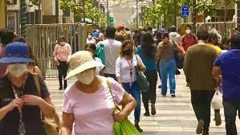

THE NEW YORK TIMES
on the wed
u° tuesday , setember 11 , 20001 9:01 PM ET|
segunda pajina
classisspieos
search
past 30 Days sing
Singn UP. Log in
find a job
post a job
find a home
personals
All classifieds
NEWS
Hugo. Mateo.
Martín.
Lucas.
Leo.
Daniel.
Alejandro.
Manuel.
OPINION :
Hugo.
Mateo.
Martín.
Lucas.
Leo.
Daniel.
Alejandro.
Manuel.
EL USO DE MASCARAILLAS TAMBIEN SERA OPCIONal en centros de trabajo

POLITICA :
La campaña en Lima entra en la recta final:
¿cuál es la estrategia de los candidatos?
NACIONAL :
Ocho meses sin rastro de la turista belga
Natacha de Crombrugghe
INTERNACIONAL:
Guerra en Ucrania. Drones suicidas iraníes:
la nueva amenaza que alerta a Kiev
AUN DIA CON NOTICIAS
Multimedia
Una guía para saber si tu candidato
tendrá facultades para cumplir
lo que promete
El posible impacto penal del uso
de aviones del Estado para familiares y
pasajeros sospechosos
Congreso define mañana permanencia de Huerta:
¿cuál será la posición de las bancadas?
¿Cómo puedo evitar una multa por no votar?
COVID-19: Perú elimina el uso obligatorio
de mascarillas en espacios cerrados, excepto en hospitales
y transporte público
EMERGENCY
RESOURSES
28 de agosto de 2022 - 12:54 p. m. El Gobierno oficializó que el uso de la mascarilla en espacios abiertos de todo el país es opcional, mientras que en espacios cerrados seguirá siendo obligatorio con excepción de las instituciones educativas.